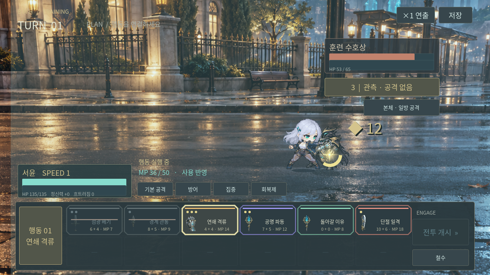
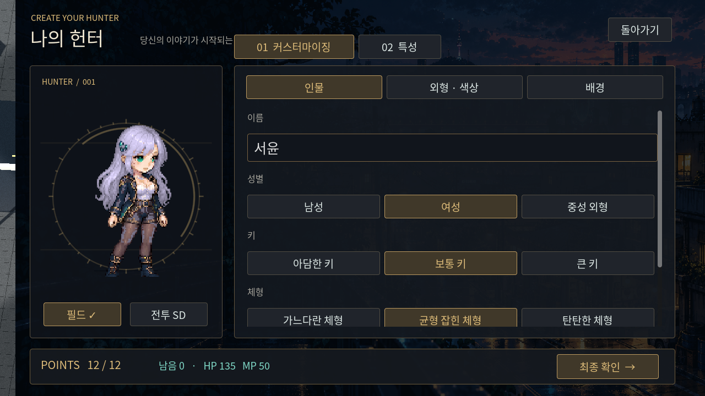

A HUNTER'S FIRST CHAPTER
BE MY
HUNTER
돌아갈 곳을 지키는 사람.
빛이 남은 거리, 각성한 헌터.
내 모습과 빌드로 서림을 걸으세요.
ZIP 압축 해제 → Xogot에서 project.godot 가져오기 → ▶ 실행
웹 실행에는 WebGL 2 지원 브라우저가 필요합니다.
웹 실행에는 WebGL 2 지원 브라우저가 필요합니다.
전투 SD 도트2.5D 배경자유 장비 교체유동 조이스틱

